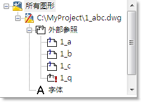

使用参照管理器，可以将已保存的参照路径更改为绝对（完全指定的）路径或相对（部分指定的）路径。也可以通过将参照路径保存为空字段来清除所有已保存路径的信息。在这种情况下，AutoCAD 将使用当前配置或工程名中保存的支持文件的搜索路径或信息融入参照。
如果附着的外部参照没有保存的路径信息，搜索将按以下顺序进行：
参照管理器将使用 AutoCAD 当前版本中的搜索路径规则。
指定相对文件夹路径的约定如下：
| \ | 查看宿主图形驱动器的根文件夹 |
| 路径 | 从根文件夹中，按照指定的路径 |
| .\路径 | 从宿主图形的文件夹中，按照指定的路径 |
| ..\路径 | 从宿主图形的文件夹中，向上移动一层文件夹并按照指定的路径 |
| ..\..\路径 | 从宿主图形的文件夹中，向上移动两层文件夹并按照指定的路径 |
要查找所有未融入的参照，请将一组图形添加至树状图列表，然后扫描树状图中是否存在已破坏的图形图标。检查“参照”列表中每个已破坏的图形，以查找哪些参照未融入。在以下插图中，图形 1_abc.dwg 已被破坏。它参照了未融入的外部参照 1_q.dwg。

在树状图中，只有外部参照显示“未找到”图标（插图中以叹号显示）。其他所有未融入的参照必须在“参照”列表中标识。包含从其他位置（不是保存的参照路径指定的位置）找到的外部参照的图形不会显示为已被破坏。
更改一个或多个已保存的参照路径后，请使用“应用”将更改保存到图形文件中。单击“应用”，只会影响“参照”列表的“状态”列中带有铅笔图标的参照。
单击“应用”后，更新的图形文件将以当前的图形文件格式保存。同时将创建或更新备份图形文件 (.bak)。
应用路径更改后，会显示一个对话框，报告已成功更改的数量。可以单击“详细信息”查看所做更改的完整列表。
单击“应用”后，“详细信息”对话框（可以通过“概要”对话框访问）将报告所有的失败。导致失败的原因可能有以下几种：
如果“详细信息”对话框报告任何失败，在解决图形文件的问题后请再次单击“应用”。


 全部展开
全部展开 全部收拢
全部收拢